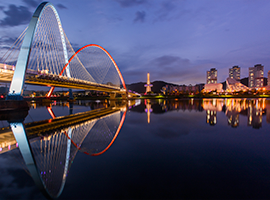
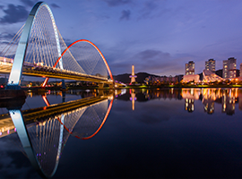

Settlement Environments (Nature, Culture, Tourism)
- Home
- About Daejeon
- Settlement Environments (Nature, Culture, Tourism)
Nature
-

 Gyejoksan Red Clay Trail
Gyejoksan Red Clay Trail- Located in Daedeok-gu, Daejeon
- Korea’s largest red clay trail for bare foot walking(14.5㎢)
-

 Jangtaesan Natural Forest
Jangtaesan Natural Forest- Located in Seo-gu, Daejeon
- The only metasequoia forest in Korea, previously visited by the President
-

 Daechungho Lake
Daechungho Lake- Located in Daedeok-gu, Daejeon
- Korea’s third largest artificial lake
-
 Hanbat Arboretum
Hanbat Arboretum- Located in Seo-gu, Daejeon
- Largest inner-city artificial arboretum in the central area of South Korea
-

 Sikjangsan Mountain
Sikjangsan Mountain- Located in Dong-gu, Daejeon
- Largest mountain in Daejeon with spectacular night views from the observatory deck
-

 Gyeryongsan Mountain (Sutonggol)
Gyeryongsan Mountain (Sutonggol)- Located in Yuseong-gu, Daejeon
- Beautiful valley recreation area located deep in the mountains
Culture & Tourism
-

 Daejeon Arts Center
Daejeon Arts Center- Located in Seo-gu, Daejeon
- Multi-purpose performance hall designed to suit any kind of performance
-

 Daejeon Modern History Exhibition Hall
Daejeon Modern History Exhibition Hall- Located in Jung-gu, Daejeon
- Former main building of Chungcheongnam-do Provincial Government that served as an administrative hub during Japanese colonial rule, the Korean War, and until 2012
-
 Daejeon O-World
Daejeon O-World- Located in Jung-gu, Daejeon
- Largest theme park in the southern region of South Korea.
-

 Dongchundang
Dongchundang- Located in Daedeok-gu, Daejeon
- Designated as National Cultural Treasure No. 209
- Elegant exterior of Dongchundang in harmony with nearby parks
-
 Uam Historic Park
Uam Historic Park- Located in Dong-gu, Daejeon
- Inner-city public park with old tile-roofed houses surrounded by trees
-
 
Expo Park

Expo Park- Located in Yujsong-gu, Daejeon
- Theme park established following the Daejeon Expo in 1993
- Public science education venue adjacent to National Science Museum, Daejeon Observatory, etc.